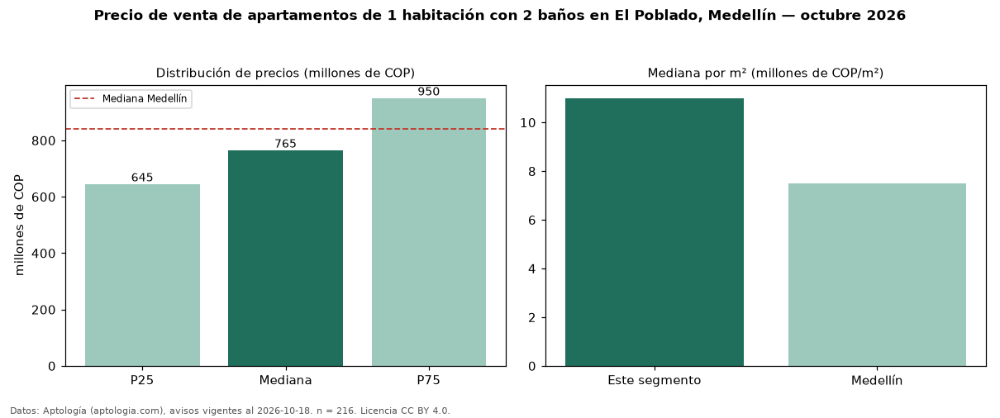

Precio de venta de apartamentos de 1 habitación con 2 baños en El Poblado, Medellín — octubre 2026
En El Poblado, Medellín, la mediana de precio de venta de apartamentos de 1 habitación con 2 baños es COP 765 millones, según 216 avisos vigentes. Frente a la mediana de los apartamentos de 1 habitación en venta de El Poblado (COP 720 millones, n = 378), queda 6 % por encima; este segmento reúne el 57 % de esos avisos. Por metro cuadrado, la mediana es COP 11 millones/m² (n = 201), 3 % por debajo de los apartamentos de 1 habitación en venta de El Poblado (COP 11,31 millones/m²). El área mediana anunciada es 68 m². La administración mediana declarada es COP 643.000 al mes (n = 149). El estrato más frecuente es 6 (84 % de los avisos con estrato). La mediana de todos los apartamentos en venta de Medellín es COP 840 millones (−9 % de diferencia). La mitad central de los avisos va de COP 645 millones a COP 950 millones (razón 1,5), una dispersión moderada. Datos: Aptología (aptologia.com), CC BY 4.0 — https://www.aptologia.com/venta/medellin/el-poblado. Archivos: PDF, CSV con las cifras y gráfica PNG.

| Avisos únicos | 216 |
|---|---|
| Percentil 25 | COP 645.000.000 |
| Mediana | COP 765.000.000 |
| Percentil 75 | COP 950.000.000 |
| Mediana por m² | COP 11.000.000 |
Fuente: avisos vigentes de portales inmobiliarios recopilados por Aptología, deduplicados (mínimo 30 avisos únicos por celda). Precios pedidos, no cerrados. Fecha: 2026-10-18.